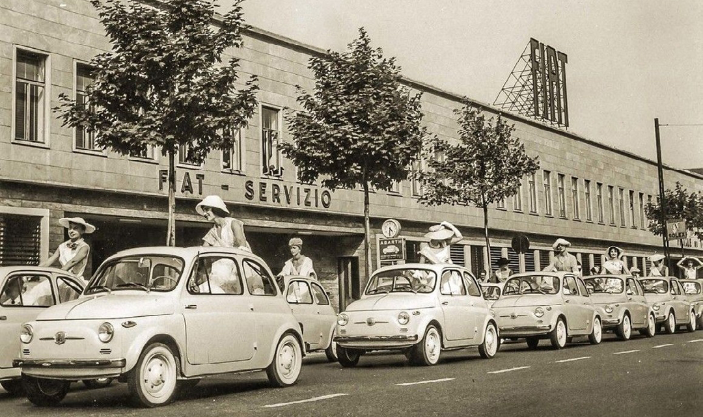

FIAT: conheça a história centenária da marca italiana
Em 11 de julho de 1899, nascia a Fábrica Italiana Automobilística de Turim, cujo acrônimo tornou-se conhecido mundialmente: FIAT. Primeiramente, a história da Fiat vem da Itália para o mundo, a FIAT é uma das empresas automobilísticas com maior tradição e reconhecimento.
Bem como, Fundada por Giovanni Agnelli, a FIAT se tornou a maior montadora de carros da Itália, em 1910. Tamanho destaque fez com que a montadora sofresse considerável impacto em sua atividade industrial durante o período de Guerras Mundiais. Nesse sentido, com participação ativa nas duas grandes Guerras, a FIAT produziu tratores, maquinários, motores marinhos e até aviões para o governo italiano.
No pós-guerra, o negócio, no entanto, se firmou mesmo na produção de automóveis. A partir doas anos 1950, a Itália viveu um período de boom econômico e a indústria automobilística foi um dos principais propulsores de crescimento, tendo a produção aumentado seis vezes ao longo da década